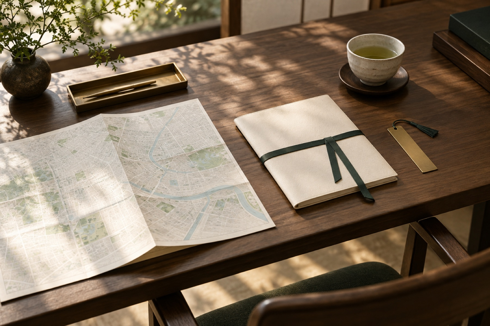

日本の正規医療機関と連携
健診、美容医療、再生医療、生殖補助医療などのご希望に応じて医療機関や医師との連携を支援し、診療資料の翻訳にも対応します。
AI アシスタント
SHŌは XIUYI の AI アシスタントです。検査資料やよくあるご質問、渡航前の準備事項を整理できます。診療上の判断は医療機関にご相談ください。
SHŌに相談Medical Services
ご希望の検査や治療、滞在のご予定を伺い、日本の医療機関での受診をひとつの日程に整えます。

Why XIUYI
医療機関との連携から滞在の段取りまで、ひとりの担当者が最初から最後まで寄り添います。
健診、美容医療、再生医療、生殖補助医療などのご希望に応じて医療機関や医師との連携を支援し、診療資料の翻訳にも対応します。

初回相談から医療機関の予約、滞在中の受診、受診後の連絡まで、専任担当者が調整します。

医療機関の予約に合わせ、送迎、宿泊、滞在日程を調整します。付帯サービスは別途お見積りします。
Support
受診の前から帰国後の連絡まで、必要なところだけを選んでご依頼いただけます。

既往の検査結果、病歴、今回の受診目的を踏まえて相談内容を整理し、検査や診療の予約を調整します。
来院から退出まで担当者が同席します。医師の説明はその場で通訳し、疑問もその場で伺えます。
検査内容に応じて施設と専門医を選定し、予約・資料提出・日程調整を代行します。
フライトと受診予定に合わせ、空港送迎や宿泊施設・医療機関間の移動を手配します。
受診場所と予約日時に合わせ、宿泊先の選定や滞在日程の調整を支援します。
※ 送迎、宿泊、滞在日程の調整は付帯サービスです。費用は正式なお見積りをご確認ください。